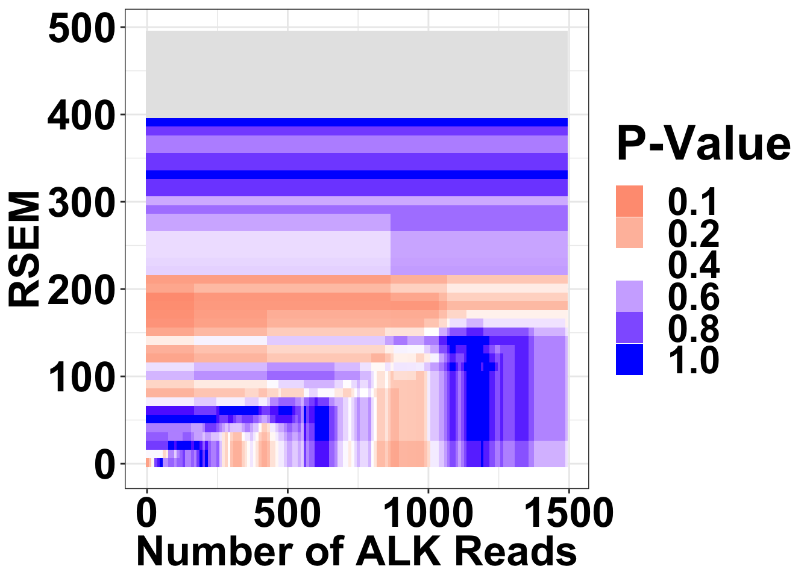

Last updated: 2019-02-19
workflowr checks: (Click a bullet for more information)-
✔ R Markdown file: up-to-date
Great! Since the R Markdown file has been committed to the Git repository, you know the exact version of the code that produced these results.
-
✔ Environment: empty
Great job! The global environment was empty. Objects defined in the global environment can affect the analysis in your R Markdown file in unknown ways. For reproduciblity it’s best to always run the code in an empty environment.
-
✔ Seed:
set.seed(20190211)The command
set.seed(20190211)was run prior to running the code in the R Markdown file. Setting a seed ensures that any results that rely on randomness, e.g. subsampling or permutations, are reproducible. -
✔ Session information: recorded
Great job! Recording the operating system, R version, and package versions is critical for reproducibility.
-
Great! You are using Git for version control. Tracking code development and connecting the code version to the results is critical for reproducibility. The version displayed above was the version of the Git repository at the time these results were generated.✔ Repository version: ba899cb
Note that you need to be careful to ensure that all relevant files for the analysis have been committed to Git prior to generating the results (you can usewflow_publishorwflow_git_commit). workflowr only checks the R Markdown file, but you know if there are other scripts or data files that it depends on. Below is the status of the Git repository when the results were generated:
Note that any generated files, e.g. HTML, png, CSS, etc., are not included in this status report because it is ok for generated content to have uncommitted changes.Ignored files: Ignored: .Rhistory Ignored: .Rproj.user/ Ignored: analysis/figure/ Untracked files: Untracked: code/alldata_compiler.R Untracked: code/contab_maker.R Untracked: code/mut_excl_genes_datapoints.R Untracked: code/mut_excl_genes_generator.R Untracked: code/quadratic_solver.R Untracked: code/simresults_generator.R Untracked: code/tcga_skcm_data_parser.Rmd Untracked: data/All_Data_V2.csv Untracked: data/all_data.csv Untracked: data/tcga_alk_expression/ Untracked: docs/figure/Filteranalysis.Rmd/ Untracked: filteranalysisheatmap.pdf Untracked: output/alkati_filtercutoff_allfilters.csv Untracked: output/alkati_mtn_pval_fig2B.pdf Untracked: output/alkati_skcm_exonimbalance.pdf Untracked: output/skcm_alk_exon_expression.csv
| tle: “ALKATI Filter Cutoff Analysis” |
| thor: “Haider Inam” |
| te: “2/18/2019” |
| tput: html_document |
library(ggplot2)
library(knitr)
library(dplyr)
Attaching package: 'dplyr'The following objects are masked from 'package:stats':
filter, lagThe following objects are masked from 'package:base':
intersect, setdiff, setequal, unionlibrary(tictoc)
library(foreach)
library(doParallel)Loading required package: iteratorsLoading required package: parallelsource("code/alldata_compiler.R")
source("code/contab_maker.R")
######################Cleanup for GGPlot2#########################################
cleanup=theme_bw() +
theme(plot.title = element_text(hjust=.5),
panel.grid.major = element_blank(),
panel.grid.major.y = element_blank(),
panel.background = element_blank(),
axis.line = element_line(color = "black"))Varying Filter for mean RPKM from 1:100
Note that by mean RPKM, I mean ratio of 20-29 RPKM/1-19 RPKM
#Run Filter Analysis
ct=1
simresults<-matrix(nrow=100,ncol=2)
alldata=read.csv("data/all_data.csv",sep=",",header=T,stringsAsFactors=F)
for (meanRPKM in 1:100){
alldata_filtered=alldata%>%
group_by(Patid,mean_RPKM_1.19,mean_RPKM_20.29,Ratio20.29, mRNA_count,BRAF,NRAS,RSEM_normalized)%>%
summarize(ATI=as.numeric(mRNA_count>=500&Ratio20.29>meanRPKM&RSEM_normalized>=100)[1])
alldata_comp=alldata_compiler(alldata_filtered,'BRAF','NRAS','ATI','N',"N/A","N/A")[[2]]
contab_pc1_genex=contab_maker(alldata_comp$Positive_Ctrl1,alldata_comp$genex,alldata_comp)
simresults[ct,1]=ct #Total Count
simresults[ct,2]=fisher.test(contab_pc1_genex)$p.value #p.value
ct=ct+1
}
count=simresults[c(1:100),1]
pval=simresults[c(1:100),2]
colnames(simresults)=c("totCt","p_val")
cols=c("totCt","p_val")
simresults=as.data.frame(simresults, stringsAsFactors = F, )
simresults[colnames(simresults)] <- lapply(simresults[colnames(simresults)],as.character)
simresults[colnames(simresults)] <- lapply(simresults[colnames(simresults)],as.numeric)
#Plot Results
ggplot(simresults,aes(x=totCt,y=p_val))+geom_line(size=3)+ggtitle("Varying RPKM Filter")+xlab("Exon20:29/Exon1:19")+ylab("P-value")+theme_bw()+theme(plot.title = element_text(hjust=.5),text = element_text(size=30,face="bold"),axis.title = element_text(face="bold",size="26"),axis.text=element_text(face="bold",size="26"))# ggsave("filteranalysis_RPKM.pdf",width = 9,height = 6,units = "in",useDingbats=F)Varying Filter for mean RSEM from 1 to 1000
Note that these are the sum of RSEM across all ALK-exons
#Run Filter Analysis
ct=1
simresults<-matrix(nrow=1000,ncol=2)
alldata=read.csv("data/all_data.csv",sep=",",header=T,stringsAsFactors=F)
for (rsem in 1:1000){
alldata_filtered=alldata%>%
group_by(Patid,mean_RPKM_1.19,mean_RPKM_20.29,Ratio20.29, mRNA_count,BRAF,NRAS,RSEM_normalized)%>%
summarize(ATI=as.numeric(mRNA_count>=500&Ratio20.29>10&RSEM_normalized>=rsem)[1])
alldata_comp=alldata_compiler(alldata_filtered,'BRAF','NRAS','ATI','N',"N/A","N/A")[[2]]
contab_pc1_genex=contab_maker(alldata_comp$Positive_Ctrl1,alldata_comp$genex,alldata_comp)
simresults[ct,1]=ct #Total Count
simresults[ct,2]=fisher.test(contab_pc1_genex)$p.value #p.value
ct=ct+1
}
count=simresults[c(1:100),1]
pval=simresults[c(1:100),2]
colnames(simresults)=c("totCt","p_val")
cols=c("totCt","p_val")
simresults=as.data.frame(simresults, stringsAsFactors = F, )
simresults[colnames(simresults)] <- lapply(simresults[colnames(simresults)],as.character)
simresults[colnames(simresults)] <- lapply(simresults[colnames(simresults)],as.numeric)
#Plot Results
ggplot(simresults,aes(x=totCt,y=p_val))+geom_line(size=3)+ggtitle("Varying RSEM Filter")+xlab("RSEM")+ylab("P-Value")+theme_bw()+theme(plot.title = element_text(hjust=.5),text = element_text(size=30,face="bold"),axis.title = element_text(face="bold",size="26"),axis.text=element_text(face="bold",size="26"))# ggsave("filteranalysis_RSEM.pdf",width = 9,height = 6,units = "in",useDingbats=F)Varying Filter for ALK raw read count from 1 to 10,000
Note that these are the sum of mRNA counts across all ALK-exons
#Run Filter Analysis
ct=1
simresults<-matrix(nrow=1000,ncol=2)
alldata=read.csv("data/all_data.csv",sep=",",header=T,stringsAsFactors=F)
for (rawreadcount in 1:1000){
alldata_filtered=alldata%>%
group_by(Patid,mean_RPKM_1.19,mean_RPKM_20.29,Ratio20.29, mRNA_count,BRAF,NRAS,RSEM_normalized)%>%
summarize(ATI=as.numeric(mRNA_count>=rawreadcount&Ratio20.29>10&RSEM_normalized>=100)[1])
alldata_comp=alldata_compiler(alldata_filtered,'BRAF','NRAS','ATI','N',"N/A","N/A")[[2]]
contab_pc1_genex=contab_maker(alldata_comp$Positive_Ctrl1,alldata_comp$genex,alldata_comp)
simresults[ct,1]=ct #Total Count
simresults[ct,2]=fisher.test(contab_pc1_genex)$p.value #p.value
ct=ct+1
}
count=simresults[c(1:100),1]
pval=simresults[c(1:100),2]
colnames(simresults)=c("totCt","p_val")
simresults=as.data.frame(simresults, stringsAsFactors = F, )
simresults[colnames(simresults)] <- lapply(simresults[colnames(simresults)],as.character)
simresults[colnames(simresults)] <- lapply(simresults[colnames(simresults)],as.numeric)
#Plot results
ggplot(simresults,aes(x=totCt,y=p_val))+geom_line(size=3)+ggtitle("Varying ALK Raw Read Count")+xlab("Count")+ylab("P-value")+theme_bw()+theme(plot.title = element_text(hjust=.5),text = element_text(size=30,face="bold"),axis.title = element_text(face="bold",size="26"),axis.text=element_text(face="bold",size="26"))# ggsave("filteranalysis_Count.pdf",width = 9,height = 6,units = "in",useDingbats=F)Varying all Filters. This runs on parallel for-loops to improve computation time.
Since the filter cutoffs code take a long time, it is only run once. This code generates alkati_filtercutoff_allfilters.csv
#This chunk utilizes parallel for-loops to omptimize computational efficiency
#Run Filter Analysis using combination of filters
tic()
filename="data/all_data.csv"
alldata=read.csv(filename,sep=",",header=T,stringsAsFactors=F)
cores=detectCores()
cl= makeCluster(cores[1]-1)
registerDoParallel(cl)
#RPKM read count 1 to 100
simresults<-foreach(rawreadcount=seq(from=1,to=1500,by=10),.combine = rbind) %dopar% {
ct=1
simresults=matrix(nrow=100000,ncol=7)
library(dplyr)
#RSEM read count 1 to 1000
for (rsem in seq(from=1,to=1000,by=10)){
#Raw read count 1 to 10,000
for (rpkm in seq(from=2,to=30,by=2)) {
alldata_filtered=alldata%>%
group_by(Patid,mean_RPKM_1.19,mean_RPKM_20.29,Ratio20.29, mRNA_count,BRAF,NRAS,RSEM_normalized)%>%
summarize(ATI=as.numeric(mRNA_count>=rawreadcount&Ratio20.29>=rpkm&RSEM_normalized>=rsem)[1])
alldata_comp=alldata_compiler(alldata_filtered,'BRAF','NRAS','ATI','N',"N/A","N/A")[[2]]
contab_pc1_genex=contab_maker(alldata_comp$Positive_Ctrl1,alldata_comp$genex,alldata_comp)
contab_pc2_genex=contab_maker(alldata_comp$Positive_Ctrl2,alldata_comp$genex,alldata_comp)
tot_alkati=sum(alldata_comp$genex)
simresults[ct,1]=ct #Totalcount
simresults[ct,2]=rpkm #RPKM
simresults[ct,3]=rsem #RSEM
simresults[ct,4]=rawreadcount #Alkreads
simresults[ct,5]=fisher.test(contab_pc1_genex)$p.value #p.value
simresults[ct,6]=fisher.test(contab_pc2_genex)$p.value #p.value
simresults[ct,7]=tot_alkati #Total count of ALKATI patients
ct=ct+1
}
}
simresults
}
stopCluster(cl)
toc()
colnames(simresults)=c("totCt","rpkm","rsem","alkreads","p_val_pc1","p_val_pc2","tot_alk")
#making simresults a dataframe
simresults=as.data.frame(simresults, stringsAsFactors = F)
#making everything a numeric
simresults[colnames(simresults)] <- lapply(simresults[colnames(simresults)],as.character)
simresults[colnames(simresults)] <- lapply(simresults[colnames(simresults)],as.numeric)
write.csv(simresults,"output/alkati_filtercutoff_allfilters.csv")simresults=read.csv("output/alkati_filtercutoff_allfilters.csv")Figure 3a
NRAS vs ALKATI
Heat map for NRAS vs ALKATI P-values are only shown if there were at least 20 patients that met those filters
datapoints=simresults %>%
filter(rsem<=500,alkreads<=1500)%>%
group_by(rsem,alkreads,tot_alk) %>%
summarise(min_p_val_pc2=min(p_val_pc2),rpkm_atpval=rpkm[min(p_val_pc2)][1])
datapoints[datapoints$tot_alk<20,]$min_p_val_pc2=""
datapoints$min_p_val_pc2=as.numeric(datapoints$min_p_val_pc2)
ggplot(datapoints,aes(x=alkreads,y=rsem))+geom_tile(aes(fill=min_p_val_pc2))+
scale_fill_gradient2(low ="red" ,mid ="white" ,high ="blue",midpoint = .3 ,name="P-Value", na.value = "gray")+
# scale_x_log10()+
# scale_fill_gradient2()+
# scale_fill_gradient(low = "red",high = "blue",name = "P-Value")+
theme(panel.grid.major = element_blank(),
panel.grid.minor = element_blank(),
panel.background = element_blank(),
axis.line = element_line(colour = "black"))+
xlab("Number of ALK Reads")+ylab("RSEM")+
# ggtitle("Varying Combinations of Filters Does Not Create \nMutual Exclusivity Between ALK-ATI & BRAF")+
theme_bw()+
theme(plot.title = element_text(hjust=.5),text = element_text(size=30,face="bold"),axis.title = element_text(face="bold",size="26"),axis.text=element_text(face="bold",color="black",size="26"))# ggsave("filteranalysisheatmap.pdf",width = 16,height = 14,units = "in",useDingbats=F)Heat map for NRAS vs ALKATI with count data
datapoints=simresults %>%
filter(rsem<=500,alkreads<=1000)%>%
group_by(rsem,alkreads,tot_alk) %>%
summarise(min_p_val_pc2=min(p_val_pc2),rpkm_atpval=rpkm[min(p_val_pc2)][1])
ggplot(datapoints,aes(x=alkreads,y=rsem))+geom_tile(aes(fill=tot_alk))+
scale_fill_gradient2(low ="red" ,mid ="white" ,midpoint = 40,high ="blue",name="ALKATI Count")#Trying different tiles for RPKM
datapoints=simresults %>%
filter(rsem<=500,alkreads<=2000,rpkm%in%c(6,12,18,30))%>%
group_by(rsem,alkreads,tot_alk,rpkm) %>%
summarise(min_p_val_pc2=min(p_val_pc2))
ggplot(datapoints,aes(x=alkreads,y=rsem))+geom_tile(aes(fill=tot_alk))+facet_wrap(~rpkm)+
scale_fill_gradient2(low ="red" ,mid ="white" ,midpoint = 40,high ="blue",name="ALKATI Count")###Distribution of the number of ALKATI patients across different conditions
###Remember: ALKATI patients had exon ratio of 10, rsem >100, and counts >500. i.e. green region
###The takeaway from this plot is that we can try most filters without having to worry about patient numbers. Will look at the p-values for these orange filters next
ggplot(datapoints,aes(x=alkreads,y=rsem))+geom_tile(aes(fill=tot_alk))+facet_grid(~rpkm)+
scale_fill_gradientn(colours = rainbow(5),values=c(.1,.2,.3,.4,1),limits=c(0,100),breaks = c(9,10,20,30,40,100),name="# ALKATI \n Patients",guide = "legend")+
ggtitle("Total ALKATI patients across exon20-29/ex1-19 ratios")+
cleanup###Taking a look at whether there are any statistically significant regions.
###There is only one region. We don't see mutual exclusivity at this region in the p-value plot
###only p-values between 0 and 0.1 are shown
ggplot(datapoints,aes(x=alkreads,y=rsem))+geom_tile(aes(fill=min_p_val_pc2))+facet_grid(~rpkm)+
scale_fill_gradient2(low ="red" ,mid ="white" ,high ="blue",midpoint = .05 ,name="P-Value",guide = "legend",limits=c(0,.1))+
cleanup###If there are <20 patients for a set of filters, take that data out.
datapoints[datapoints$tot_alk<20,]$min_p_val_pc2=""
datapoints$min_p_val_pc2=as.numeric(datapoints$min_p_val_pc2)
###Regions with less than 20 patients are shaded gray.
ggplot(datapoints,aes(x=alkreads,y=rsem))+geom_tile(aes(fill=min_p_val_pc2))+facet_grid(~rpkm)+
scale_fill_gradient2(low ="red" ,mid ="white" ,high ="blue",midpoint = .2 ,name="P-Value",guide = "legend",limits=c(0,1),na.value = "gray")+
cleanup ##ALKATI vs BRAF
###ALKATI is not mutually exclusive with BRAF across a range of filters Heatmaps code continued P-values reported are the minimum p-values across RPKM filters Single heat map
datapoints=simresults %>%
filter(rsem<=500,alkreads<=1000)%>%
group_by(rsem,alkreads,tot_alk) %>%
summarise(min_p_val_pc1=min(p_val_pc1),rpkm_atpval=rpkm[min(p_val_pc1)][1])
datapoints[datapoints$tot_alk<20,]$min_p_val_pc1=""
datapoints$min_p_val_pc1=as.numeric(datapoints$min_p_val_pc1)
ggplot(datapoints,aes(x=alkreads,y=rsem))+geom_tile(aes(fill=min_p_val_pc1))+
scale_fill_gradient2(low ="red" ,mid ="white" ,high ="blue",midpoint = .3 ,name="P-Value",na.value = "gray")+
# scale_x_log10()+
# scale_fill_gradient2()+
# scale_fill_gradient(low = "red",high = "blue",name = "P-Value")+
theme(panel.grid.major = element_blank(),
panel.grid.minor = element_blank(),
panel.background = element_blank(),
axis.line = element_line(colour = "black"))+
xlab("Number of ALK Reads")+ylab("RSEM")+
# ggtitle("Varying Combinations of Filters Does Not Create \nMutual Exclusivity Between ALK-ATI & BRAF")+
theme_bw()+
theme(plot.title = element_text(hjust=.5),text = element_text(size=30,face="bold"),axis.title = element_text(face="bold",size="26"),axis.text=element_text(face="bold",color="black",size="26"))
# ggsave("filteranalysisheatmap.pdf",width = 16,height = 14,units = "in",useDingbats=F)Facets of heat maps across a range of ex20-29/1-19 ratios
datapoints=simresults %>%
filter(rsem<=1000,alkreads<=2000,rpkm%in%c(6,12,18,30))%>%
group_by(rsem,alkreads,tot_alk,rpkm) %>%
summarise(min_p_val_pc1=min(p_val_pc1))
###Distribution of the number of ALKATI patients across different conditions
###Remember: ALKATI patients had exon ratio of 10, rsem >100, and counts >500. i.e. in the green region
###The takeaway from this plot is that we can try filters in the yellow region region. Will look at the p-values for these orange filters next
ggplot(datapoints,aes(x=alkreads,y=rsem))+geom_tile(aes(fill=tot_alk))+facet_grid(~rpkm)+
scale_fill_gradientn(colours = rainbow(5),values=c(.1,.2,.3,.4,1),limits=c(0,100),breaks = c(9,10,20,30,40,100),name="# ALKATI \n Patients",guide = "legend")+
ggtitle("Total ALKATI patients across exon20-29/ex1-19 ratios")+
cleanup
# P-Values Heat map
# Data is only plotted if number of ALKATI patients was >25
datapoints[datapoints$tot_alk<20,]$min_p_val_pc1=""
datapoints$min_p_val_pc1=as.numeric(datapoints$min_p_val_pc1)
ggplot(datapoints,aes(x=alkreads,y=rsem))+geom_tile(aes(fill=min_p_val_pc1))+facet_grid(~rpkm)+
scale_fill_gradient2(low ="red" ,mid ="white" ,high ="blue",midpoint = .4 ,name="P-Value",guide = "legend",limits=c(0,1),na.value = "gray")+
cleanupSession information
sessionInfo()R version 3.5.2 (2018-12-20)
Platform: x86_64-apple-darwin15.6.0 (64-bit)
Running under: macOS Mojave 10.14.3
Matrix products: default
BLAS: /Library/Frameworks/R.framework/Versions/3.5/Resources/lib/libRblas.0.dylib
LAPACK: /Library/Frameworks/R.framework/Versions/3.5/Resources/lib/libRlapack.dylib
locale:
[1] en_US.UTF-8/en_US.UTF-8/en_US.UTF-8/C/en_US.UTF-8/en_US.UTF-8
attached base packages:
[1] parallel stats graphics grDevices utils datasets methods
[8] base
other attached packages:
[1] bindrcpp_0.2.2 doParallel_1.0.14 iterators_1.0.10 foreach_1.4.4
[5] tictoc_1.0 dplyr_0.7.8 knitr_1.21 ggplot2_3.1.0
loaded via a namespace (and not attached):
[1] Rcpp_1.0.0 compiler_3.5.2 pillar_1.3.1
[4] git2r_0.24.0 plyr_1.8.4 workflowr_1.1.1
[7] bindr_0.1.1 R.methodsS3_1.7.1 R.utils_2.7.0
[10] tools_3.5.2 digest_0.6.18 evaluate_0.12
[13] tibble_2.0.1 gtable_0.2.0 pkgconfig_2.0.2
[16] rlang_0.3.1 rstudioapi_0.9.0 yaml_2.2.0
[19] xfun_0.4 withr_2.1.2 stringr_1.3.1
[22] rprojroot_1.3-2 grid_3.5.2 tidyselect_0.2.5
[25] glue_1.3.0 R6_2.3.0 rmarkdown_1.11
[28] reshape2_1.4.3 purrr_0.3.0 magrittr_1.5
[31] whisker_0.3-2 codetools_0.2-16 backports_1.1.3
[34] scales_1.0.0 htmltools_0.3.6 assertthat_0.2.0
[37] colorspace_1.4-0 labeling_0.3 stringi_1.2.4
[40] lazyeval_0.2.1 munsell_0.5.0 crayon_1.3.4
[43] R.oo_1.22.0 This reproducible R Markdown analysis was created with workflowr 1.1.1